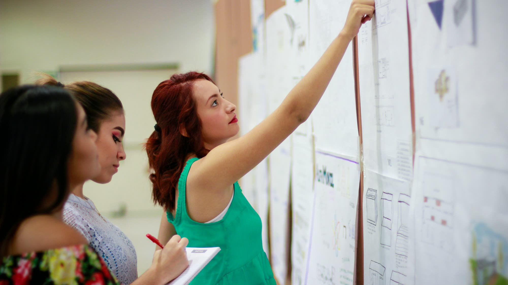

Amaze Research, Innovation & Exploration Society
Grassroots data, gathered rigorously
ARIES is the research hub of Amaze Consortium, dedicated to structured grassroots research across Bangladesh and beyond — moving past assumption and surface-level interpretation to gather direct insight from individuals, communities, and institutions.
The education pilot study
One central question, asked through three lenses — then carried from pilot into full-scale fieldwork.
Read the study8
Objectives guiding the study
7
Collection methods mapped
2
Phases — pilot, then full scale
3
Lenses on one central question
Its goal is not only to study problems but to transform findings into meaningful, evidence-based initiatives that can be implemented within and beyond the Consortium.
From the ARIES mandate
We exist to close the distance between what is assumed about communities and what those communities actually report. Every finding we publish is traceable to a method, a sample, and a date.
About ARIESFocus areas
Where our research is currently directed
The pilot study now in development asks one central question through three lenses: what students and teachers actually think education is for.
Lens 01
Perceptions of education
How students and teachers describe the purpose of learning in their own words, rather than the assumptions outside commentary tends to make for them.
Read the approach
Lens 02
Innovation & critical thinking
Where independent thought and creativity are growing, and where exam-focused, memorisation-heavy habits are still crowding them out.
Read the approachLens 03
Job-oriented mindset
Whether students see education mainly as a route to employment, or as a tool for broader, holistic personal development — and what shapes that view.
Read the approachApproach
Qualitative and quantitative, combined
By combining both qualitative and quantitative approaches, ARIES ensures that insights reflect real conditions rather than theoretical assumptions — building, over time, a sustainable research culture of continuous inquiry, critical thinking, and data-driven decision-making.
See our full methodology2
Pilot first, then full scale
8
Guiding the study end to end
2
Research and engagement, tracked apart
7
Collection methods mapped for the field
Why this pilot exists
Gaps the existing literature hasn’t closed
Research gap
How teachers are actually managing curriculum reform
Bangladesh has mandated a shift to skill-based, competency-driven assessment, but there is little ground-level data on how teachers used to large classes and rote methods are actually handling that transition.
Research gap
Whether AI and digital tools are narrowing or widening the gap
Generative AI and high-tier digital learning tools are spreading fast, but there is little evidence yet on whether they will democratise learning or further isolate students without reliable device access.

Join the network
Contribute, learn, and lead through real work
Members are placed into small working groups to assess their skills and commitment, with a transparent, merit-based path toward leadership — open to anyone aged 15–30 with a serious interest in research.